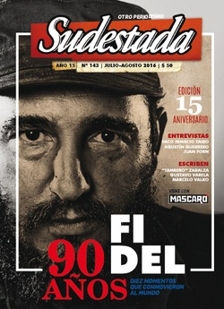

Buscar
Fidel. 90 años. Diez momentos que conmovieron al mundo
13 de agosto de 1926. En esa fecha, la Historia paría a uno de los grandes albañiles de la identidad de varias generaciones de revolucionarios y socialistas en todo el mundo. Con la excusa de su cumpleaños, seleccionamos diez momentos épicos, apenas diez episodios en la biografía del hombre que es, al mismo tiempo, referencia, ejemplo y sendero. Diez ventanas abiertas a la vida de un aventurero que rompió el curso de los tiempos y que cambió para siempre la perspectiva de una liberación americana. Desde Montevideo, escribe Jorge “Tambero” Zabalza.
Edición N° 143
Julio-Agosto de 2016
Revista bimensual
Comprar edición impresaSumario
- Fidel. 90 años. Diez momentos que conmovieron al mundo
- Fidel. La realidad de lo maravilloso
- La máquina de hacer negocios
- Juan Forn: "Contar una historia es el artefacto perfecto de transmisión"
- Willia Mae Thornton. Me llaman "Big Mama"
- "La policía dirige y protagoniza el crimen organizado"
- Paco Ignacio Taibo: "No quiero hacer literatura con Ayotzinapa. Es demasiado doloroso"
- Un domingo en el Harlem
- Agustín Guerrero: "El tango es parte de la resistencia cultural"
- Refugiados sirios. El largo camino para escapar de la guerra
- Asesinos en la casa del Señor
Compartir Articulo
1. La puerta del Moncada (1953)
Un mínimo detalle. Un relieve imprevisto. Un error decisivo y toda la operación, pensada durante meses, se derrumba en segundos. El sueño libertador de aplastar al tirano, de sacudir la dictadura con las armas del pueblo y las ideas de Martí, se desvanece en una vigilia azul, marcada por el perfil de la derrota.
El sábado 26 de julio de 1953, a las 4:45 de la madrugada, una caravana de catorce autos parte de una granja de Siboney rumbo a la aventura. A bordo viajan 120 revolucionarios mal armados, liderados por un joven abogado de oratoria poderosa, de encendidas ideas y escasa paciencia para la politiquería de salón. Su nombre es Fidel Castro. El golpe de Fulgencio Batista, en marzo de 1952, disipa cualquier duda. No es tiempo de palabras ni de conjuras partidarias, es hora de la acción. Acción con quienes se suman a una gesta patriótica, antiimperialista y, sobre todo, antidictatorial: "Tenían instinto de clase, diría, mas no conciencia de clase", definía Fidel a su propio grupo. Recorrió el país a bordo de un gastado Chevrolet, en busca de militantes para su empresa imposible. Se vinculó con decenas de jóvenes revolucionarios, con ellos profundizó el estudio del marxismo, con ellos entrenó y probó su destreza en los polígonos de tiro de las afueras de La Habana. Aquel joven que había señalado a José Martí como referencia ética, que había estudiado a Marx y a Lenin hasta definirlos como brújula para el camino, tenía un proyecto. Tenía una patria imaginada que comenzaba con 120 hombres y catorce autos. Son ellos los que están a punto de golpear la puerta de la Historia americana. La fecha elegida para la acción no es azarosa: la noche anterior la atmósfera de los festejos de carnaval había distorsionado la respiración de la ciudad. El destino del convoy es el cuartel Moncada, el segundo en importancia de toda Cuba. Al mismo tiempo, otro grupo se desplaza hasta un destacamento militar en Bayamo, para evitar un contraataque por la carretera central, acción a la que se destinaron cuarenta hombres.
El objetivo es dominar la guarnición, tomar las armas y salir, para distribuirlas en diversas zonas de Santiago. Cada detalle está rigurosamente estudiado, cada contingencia está prevista: los soldados serán sorprendidos al amanecer, mientras duermen. Fidel y sus hombres tomarán la jefatura, otro grupo comandado por Abel Santamaría copará el Hospital Civil, mientras que Raúl y su columna se encargarán del Palacio de Justicia. Todos van vestidos con uniformes del ejército de Batista y con el grado de sargentos, para despistar al enemigo, para sembrar confusión, para aprovechar el factor sorpresa.
¿Quién logra dormir la noche previa en la pequeña granja, cuando todos conocen el objetivo de su misión y saben que ahora es tiempo de los nervios y la ansiedad? Ya el sol clarea cuando el primer auto se acerca al portón de ingreso al Moncada. Fidel maneja el segundo coche, a escasa distancia. Es el momento de mayor riesgo. Un mínimo descuido y la sorpresa se perderá para siempre. Mientras Ramiro Valdés y sus compañeros se ocupan de reducir a los centinelas del portón, Fidel observa un detalle imprevisto: dos soldados se acercan a la escena, intuyendo que algo raro sucede. En una fracción de segundo, ante el riesgo de que los soldados disparen contra el grupo de Ramiro, Fidel resuelve embestir a la patrulla con su auto. El problema es que los autos que lo siguen se detienen y los combatientes comienzan a bajar. Sospechan que están dentro de las barracas, que la acción ya ha comenzado. Alguien dispara. En segundos, la balacera enciende la alerta en el cuartel. "Fue muy duro. Habíamos logrado la sorpresa total. Tres minutos después y el puesto de mando y los principales puntos de instalación habrían estado en nuestras manos" se lamenta Fidel, quien además analiza, tiempo después, otra opción que sí les hubiera permitido cumplir con el objetivo: "Había otra forma de acción, que después comprendí perfectamente cuando tuve más lectura y conocimiento. Lo que debí hacer era olvidarlo y seguir. Si el carro mío pasa sin detenerse y después otro y otro y otro más, aquellos guardias se paralizan y no disparan".
Pero nada más lejano ahora que esa conjetura. Un infierno de fuego se enciende a los pies de los combatientes, el desorden se generaliza. Cinco de ellos caen en combate. En cuestión de minutos, el plan se desmorona. Desde la mitad de la calle y después de ordenar la retirada, Fidel dispara su escopeta contra una torreta, sin percatarse de que se queda solo. Pero uno de los autos de la caravana regresa para buscarlo. Ese gesto le salva la vida. Es la primera de las varias vidas que va tachando el joven revolucionario en esas horas.
"El Moncada pudo ser tomado, y si lo hubiéramos tomado, derrocábamos a Batista, sin discusión alguna", afirma Fidel, para después agregar: "Si fuera de nuevo a organizar un plan de cómo tomar el Moncada, lo haría exactamente igual... Pero habríamos triunfado demasiado temprano".
La decisión es reorganizarse en la granja de Siboney y optar por buscar las montañas. Pero el cerco del ejército ya está montado y la cacería comienza. Una patrulla sorprende a los prófugos mientras descansan y el final parece inexorable. Los salva un joven teniente, que apacigua los ánimos de sus hombres y evita el fusilamiento: "Calma, no disparen... ¡las ideas no se matan!", les dice. Fidel se ha ganado otra muesca en su carabina, tiene más vidas que un gato.
Después llegaría el momento de su vibrante alegato ante los jueces, de asumir la responsabilidad absoluta por la acción del Moncada, de señalar a José Martí como el ideólogo de su aventura, de su inoxidable pronóstico "La historia me absolverá", de la condena a quince años de prisión, del profundo dolor por el fusilamiento de 56 compañeros a manos de los esbirros de Batista. Parece el final de su aventura, pero nada de eso. Rebelde, empuja la puerta de la Historia, hasta que se abre. La Cuba soñada por Martí espera por Fidel.
2. En casa de María Antonia... (1955)
"Es aquí", dijo Raúl antes de golpear la puerta en el cuarto piso C, en el 49 de la calle Emparán. Después de escuchar la contraseña, María Antonia recibe a los visitantes con una amplia sonrisa. Dentro del departamento, el humo espeso del cigarro borronea los contornos de las cosas. Van saludando a los compañeros casi a tientas, en voz baja. Raúl lo acompaña hasta una mesa y lo presenta, pero ya no es necesario. Ernesto reconoce a Fidel a la distancia: su voz afónica y sus ademanes exagerados no permiten confusión alguna. "Este es el médico argentino del que te hablé", dice Raúl. Ernesto extiende la mano. Fidel lo mira a los ojos y lo invita a sumarse a la conversación. Mientras monologa ante otros compañeros del Movimiento 26 de Julio, Fidel mira de reojo al forastero. Ernesto sigue la secuencia con atención y cierto recelo, en silencio. Fidel llegó a México una semana atrás, el 8 de julio de 1955, después de elegir el camino del exilio, una vez amnistiado por la dictadura de Batista. Pero antes de partir de Cuba, aprovecha los micrófonos de la prensa para lanzar una advertencia que era, al mismo tiempo, un audaz compromiso: "En 1956, seremos libres o mártires".
Como dos boxeadores que se lanzan al medio del ring, se miden a la distancia. Simulan seguir el hilo de la conversación, pero permanecen con la guardia alta, atentos a los gestos que van dejando uno y otro en esa noche de julio. Las referencias que le han acercado a Fidel sobre ese joven médico argentino se limitan a un puñado de datos: un espíritu aventurero y bohemio, un paso por Guatemala durante el derrocamiento de Jacobo Árbenz, la seguridad de algunas de sus opiniones políticas y su constancia a la hora de intentar llegar a la nevada cima del volcán Popocatépetl...
(La nota completa en la edición gráfica de Sudestada)
Comentarios
Hugo Montero
Articulos más vistos


LIBRERÍA SUDESTADA

Colección infantil

Distribuidora de Libros

Suscripción

Sudestada en URUGUAY

Otros articulos de esta edición
Juan Forn: "Contar una historia es el artefacto perfecto de transmisión"
Autor de crónicas que saltan sobre las barreras de los géneros sin detenerse demasiado en las discusiones de forma, Juan ...
 Musiqueros
Musiqueros
Agustín Guerrero: "El tango es parte de la resistencia cultural"
A los 27 años, el pianista, compositor y arreglador Agustín Guerrero sigue proponiendo creaciones para el tango del siglo XXI. ...
 Nuestra historia
Nuestra historia
Asesinos en la casa del Señor
Los vitrales en una iglesia de Bariloche dibujan una historia sugestiva. Manipulando el pasado a conveniencia del conquistador, establece un ...
 Diez Preguntas a María del Carmen Verdú
Diez Preguntas a María del Carmen Verdú
"La policía dirige y protagoniza el crimen organizado"
Abogada y referente de la coordinadora contra la represión policial e institucional (CORREPI), María del Carmen Verdú es voz autorizada ...
Fidel. La realidad de lo maravilloso
Sin entender para nada el retroceso que significaba un gobierno del herrero ruralismo, en los meses finales de 1958 acompañé ...
 Sin fronteras
Sin fronteras
Refugiados sirios. El largo camino para escapar de la guerra
Llegaron al país escapando de una guerra que ya tiene más de cinco años. Siria, la nación que los vio ...